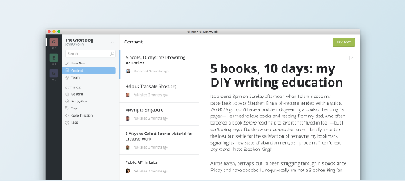

-
Node.js v4LTS成为Ghost推荐版本
作者：王赛 ·2016年7月26日
从这周起，我们将Ghost推荐Node.js版本升级为Node.js v4LTS。我们这样做其实已经落后于计划了。然而，经过大呈测试之后，我们确信Ghost可以在Node.js v4平台上流畅的运行并且内存消耗比原来也减少了。目前，Ghost（Pro）上托
阅读全文 -
Ghost桌面版APP正式发布，能同时管理多个Ghost博客
作者：王赛 ·2016年4月28日
虽然通过浏览器管理 Ghost 博客虽然很方便，但是在多个tab之间切换有时候也会很麻烦，嗯，如果能有一个独立的app应亥使用起来会更爽一些！今天的主角来了，Ghost 桌面版 APP-Ghost Desktop！目前，Ghost Desktop 还处于早期阶段
阅读全文 -
为Ubuntu和Debian 安装最新版本的Node.js
作者：王赛 ·2016年3月23日
运行Ghost必须要安装Node.js。但是Ubuntu或Debian的软件仓库中的Node.js更新较慢，甚至只能等到新版本发布才能有最新的Node.js用。下面我们说一下从NodeSource提供的仓库中安装最新版本的Node.js。支持的操作系
阅读全文新版本发布，Ghost -
Ghost 0.7.4正式发布
作者：王赛 ·2015年12月29日

紧随Ghost官方脚步，Ghosto.7.4中文正式版发布了！这一版本包含了自Ghost o.7.3版本发布以来所修正的bug，主要是针对开放API功能的改进。o.7.1、0.7.2、0.7.3这些版本哪去了？从Ghost o.7.o版本发布以来，Gh
阅读全文Ghost，新版本发布，Ghost0.7版本 -
Ghost 0.7.4正式发布
作者：王赛 ·2015年9月7日
Ghost o.7.o已经正式发布了！此版本主要对后台UI的重构，既包含重新设计，也包含底层功能的重大改进。o.7.o还为即将到来的API做了很多铺垫工作。Ghost o.7.o的主要改进[新增]设计新后台界面[新增]后台能够搜索博文和用户[新增]安阅读全文
阅读全文Ghost，新版本发布，Ghost0.7版本 -
Ghost 0.7中{{ghost foot}}助手函数将不再输出jQuery
作者：王赛 ·2015年8月29日
{{ghost_foot}}助手函数将不再输出jQuery链接了。从Ghost第一个版本开始，{{ghost_foot}}助手函数默认都会输出一个jQuery文件链接，并且这个文件还是本地存储的。最开始Ghost团队觉得这是一件对所有主题开发者有意义
阅读全文Ghost，助手函数，jQuery -
Ghost 0.7即将发布，高清大图提前看
作者：王赛 ·2015年8月23日
Ghost 官方在18号的会议记录上透露了Ghost o.7版本可能会在这个月底前发布，也就是说Github仓库里的代码不会有太大变化了。周未抽时间把master分支上的代码下载、编译、安装起来，截几张高清图，360度无死角透视一下最新版的真面目吧！安装界面
阅读全文Ghost，Ghost 0.7版本 -
Ghost 0.7 版本将会带来哪些惊喜
作者：王赛 ·2015年8月13日
后台界面首当其冲的就是后台UI的改变。从Ghosto.3.o第一个公开发布的版本至今，Ghost的后台UI一直都很简洁，顶部是一个黑底的导航条，三四个菜单项，底部是标签输入框，中司全是内容区域。如下图：但是随着Ghost功能越来越完善，越来越多，好多东西
阅读全文Ghost，新版本发布 -
Ghost 0.6.3版本正式发布
作者：王赛 ·2015年5月18日
Ghost o.6.3版本已经正式发布了！此版本主要修复了一些bug并包含了几个新特性，例如：博文预览。Ghost o.6.3的主要变化[新增]博文预览[新增]带密码保护的私密博客[新增]为作者自定义页面模板[增强]登陆状态延长至7天[修复]编辑
阅读全文Ghost，新版本发布 -
Ghost 0.6.2版本正式发布
作者：王赛 ·2015年4月26日
Ghost o.6.2主要是对o.6.x版本发布以来进行的bug修复。是否会问o.6.1版本去哪儿了？其实又被乌龙了，刚发布就发现有重大bug，所以o.6.2成了救火的版本了。。。主要变化[修复]在Ghost后台，作者（author）无法访问自己的信
阅读全文Ghost，新版本发布
第 1 页/ 共 8 页
>-
社区
QQ群：277327792
留问答社区
晶官方微博
-
下载 Ghost
Ghost中文版（0.7.4） -
标签云
- jQuery
- Ghost 0.7版本
- 开源
- 助手函数
- 标签云
- 导航
- 自定义页面
- 静态页面
- Roon.io
- 配置文件
- 又拍云存储
- 上传
- Handlebars
- 邮件
- 快捷键
- 用户指南
- 主题市场
- 新版本发布
- ...